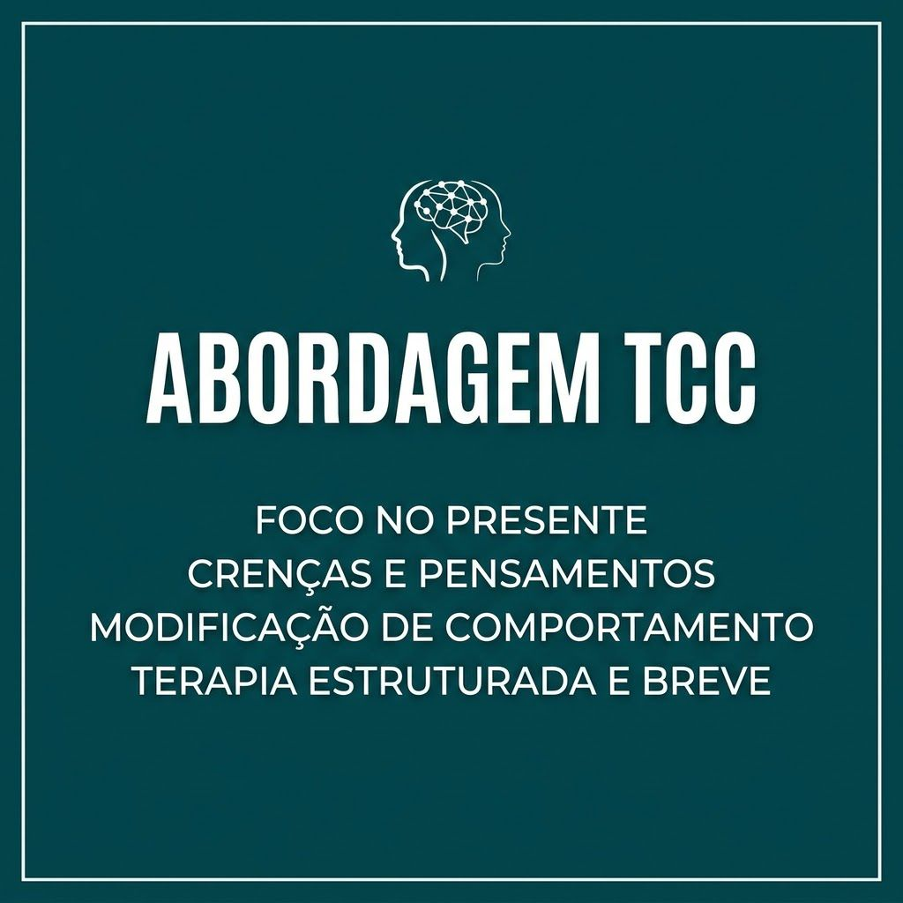

Um espaço de escuta acolhedora para você se reconectar consigo mesmo e encontrar novos caminhos.
Jenny Freitas é graduada em Psicologia pela Universidade de Uberaba, com enfoque na abordagem Terapia Cognitivo-Comportamental (TCC).
É pós-graduanda em Terapia Cognitivo-Comportamental e do Esquema, além de especializar-se em relacionamentos, conciliação e mediação de conflitos.
Aqui, você não é definido por rótulos. Cada pessoa possui uma história única, e é a partir dela que construímos um caminho de compreensão e mudança.
Agendar consultaA TCC é uma abordagem terapêutica baseada em evidências científicas que auxilia no tratamento de diversas condições emocionais e comportamentais.
Através da identificação de pensamentos distorcidos e padrões de comportamento, é possível desenvolver estratégias práticas para lidar com desafios do dia a dia.
O objetivo é ajudar você a perceber como seus pensamentos influenciam suas emoções e ações, permitindo mudanças reais e duradouras.
Saiba mais
Além de psicóloga, Jenny é mãe, esposa e avó. Acredita que os laços familiares são fundamentais para o nosso desenvolvimento emocional.
Sua vivência pessoal como mãe e avó enriquece sua escuta, permitindo uma compreensão mais profunda das dinâmicas familiares e dos desafios do cotidiano.
A vida fora do consultório também é fonte de aprendizado e acolhimento.
Cada pessoa carrega em si uma história que merece ser compreendida. A terapia é um convito para se olhar com mais profundidade, acolher suas emoções e descobrir significados que antes estavam ocultos.
É um processo de autoconhecimento onde você aprende a interpretar suas próprias páginas, reconhecendo padrões, Superando limites e escrevendo novos capítulos com mais consciência e leveza.
Meu objetivo é ajudar você a se conhecer melhor, ressignificar experiências e encontrar caminhos mais leves para lidar com as dores e desafios da vida.
Compreender os sinais e encontrar formas de lidar com o pensamento acelerado.
Acolher o sofrimento e ajudar a encontrar sentido nas experiências.
Identificar padrões e construir relacionamentos mais saudáveis.
Fortalecer a relação consigo mesmo e reconhecer o próprio valor.
Aprender a lidar com transições e transformações da vida.
Reconhecer e transformar padrões que causam sofrimento.
Algumas situações podem indicar que é hora de buscar ajuda profissional. Entender o que está acontecendo é o primeiro passo para cuidar de si.
Sentimento constante de inquietação, preocupação excessiva ou medo que interfere no dia a dia.
Um vazio ou tristeza que não passa, mesmo quando tudo parece estar bem ao redor.
Dificuldades que se repetem nas relações, brigas frequentes ou sensação de não ser compreendido.
Oscilações emocionais intensas que afetam o convívio e a qualidade de vida.
Dificuldade para lidar com perdas, luto ou experiências traumáticas que marcaram.
Críticas constantes a si mesmo, sentimento de não ser suficiente ou medo de julgamento.
Dificuldade para dormir, cansaço constante ou sensação de esgotamento.
Problemas de concentração, memória ou dificuldade para lidar com tarefas do cotidiano.
Histórias de transformação, autoconhecimento e acolhimento compartilhadas por quem vivenciou o processo analítico.
"Excelente profissional! Ela atendeu minha filha entre 4-5 anos e tivemos ótimos resultados nas consultas. Esclareceu dúvidas que nós pais tínhamos. Recomendo."
Há 2 anos"Comecei a terapia com a Jenny, num momento muito delicado da minha vida! E hoje olhando pra trás, não sei aonde estaria se não tivesse ela para me acompanhar. Sem sombra de dúvidas, ela me ergueu quando estava no fundo do poço e sem forças para sair. Obrigada Jenny! Você é fantástica em tudo que faz."
Há 2 anos"Ambiente acolhedor, promove sensação de paz, segurança e conforto. Profissional competente, focada em auxiliar minhas necessidades! Consegui 'aliviar' inúmeros conflitos! Recomendo muito e sugiro marcar um dia de conversa com ela!"
Há 2 anos"Profissional maravilhosa. Ambiente acolhedor e muito lindo, cafézinho uma delícia. Tudo pensado para nos atender com leveza e empatia."
Há 2 anos"Uma profissional sensacional, muito conhecimento, um ambiente lindo e super acolhedor, sucesso sempre psico!"
Há 2 anos"Uma verdadeira profissional, que acolhe com toda dedicação e carinho seus pacientes. Desejo sucesso sempre."
Há 2 anos"Maravilhosa, super gentil, acolhedora, ajuda muito a enfrentar e resolver os problemas expostos. Recomendo!"
Há 2 anos"Excelente psicóloga, super recomendo para quem busca uma profissional capacitada e atenciosa."
Há 2 anos"Maravilhoso lugar, super recomendo. Uma profissional maravilhosa e competente."
Há 2 anosJá participou de uma consulta ou leu nossos e-books?
A primeira sessão é um momento de acolhimento e escuta. Vamos conversar sobre o que te trouxe até aqui, suas expectativas e como posso te ajudar. É um espaço seguro e sem julgamentos.
As sessões têm duração de 50 minutos, realizadas semanalmente. A frequência e o tempo de acompanhamento dependem de cada pessoa e de suas necessidades.
O atendimento online é realizado por videochamada, com o mesmo sigilo e qualidade do presencial. Você precisa apenas de um ambiente tranquilo e conexão com a internet.
Minha abordagem é baseada na Psicanálise, que busca compreender os processos inconscientes, conflitos internos e como eles se manifestam no dia a dia, nos relacionamentos e nas emoções.
Você pode agendar pelo WhatsApp ou pelo Instagram. Vamos conversar para encontrar o melhor horário e esclarecer qualquer dúvida que você tenha.
Não é preciso trazer nada além de si mesmo. Apenas venha com a mente aberta e disposição para se autoconhecer. O restante construiremos juntos ao longo do processo.